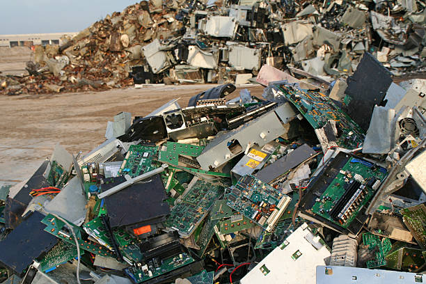

Lixo Eletrônico

O que é e-lixo?
O lixo eletrônico, também conhecido como e-lixo são resíduos de equipamentos eletroeletrônicos (REEE). Todos estes
produtos eletroeletrônicos que são descartados por seus usuários sem a intenção de reutilizá-los ou recicla-los, acabam sendo despejados em aterros sanitários e lixões.
Como estes materiais possuem muitos componentes tóxicos em suas estruturas, ao serem descartados de maneira incorreta, podem contaminar o solo e lençóis freáticos,
colocando em risco a saúde de uma população, já que ao entrar em contato com solo e lençóis freáticos, podem afetar o ser humano diretamente,

através da água que consumimos e até mesmo de alimentos oriundos da terra.
De acordo com o Centro de Tecnologia Mineral (CETEM),
cerca de 70% dos metais pesados que são encontrados nos lixões e aterros sanitários, são vindos de equipamentos eletrônicos descartados incorretamente.
Outro problema grave é relacionado aos países mais pobres, pois países desenvolvidos que são grandes produtores de lixo eletrônico,
acabam descartando-os em países em desenvolvimento e subdesenvolvidos. Mesmo que exista uma lei internacional que proíba isso, muitos territórios continuam com essa prática e não respeitam a lei.
A denominada logística reversa é um importante instrumento para gestão desses resíduos. Tendo como principal objetivo reinserir os resíduos ou materiais do pós-consumo em novos ciclos produtivos.
Com isso é perceptível que o e-lixo tem potencial de transformação e pode até mesmo ser lucrativo para as empresas fabricantes, quando são manipulados da forma correta,
esses resíduos podem ganhar uma nova vida.
Segundo uma lei brasileira, a responsabilidade pelo ciclo da vida dos produtos é compartilhada, ou seja, todos são responsáveis por parte deste processo.
Cabe aos consumidores entregarem seus eletrônicos a locais adequados, onde serão descartados da forma correta. Estes locais de descarte possuem conexão direta com empresas fabricantes
que são responsáveis por assegurar que o destino final do produto ocorrerá de forma adequada.
Por conta disso, deve-se haver uma conscientização aos usuários destes produtos para que o descartem de forma correta, assim então evitando danos ao meio ambiente e consequentemente a saúde humana.